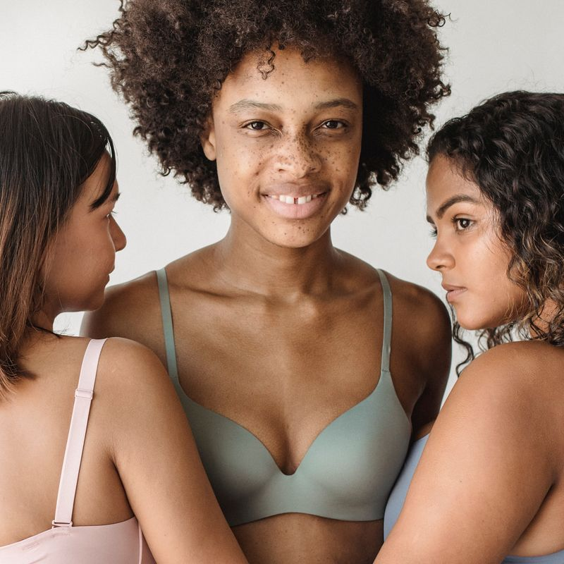
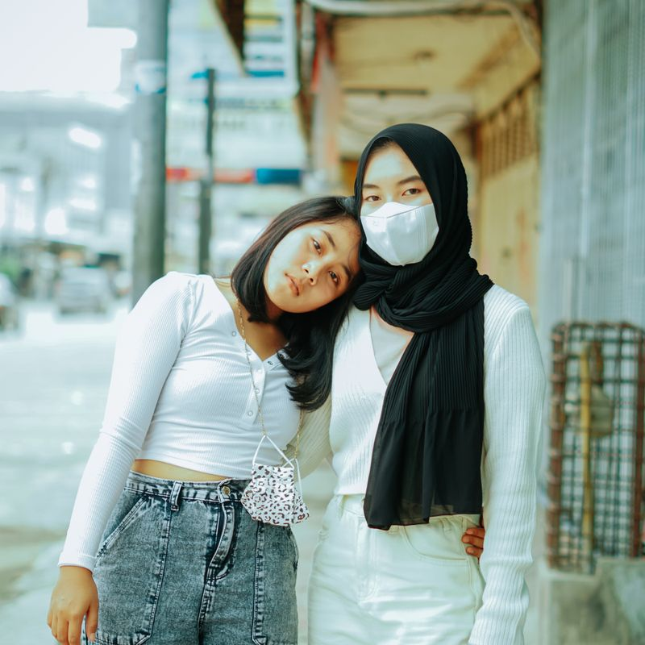
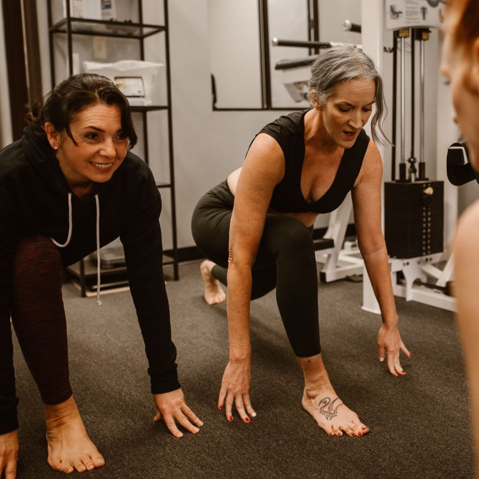

Recuerda, eres más fuerte de lo que crees. No estás sola en esta lucha; a tu lado hay una comunidad dispuesta a apoyarte en cada paso del camino. Aunque enfrentemos desafíos, nuestra resiliencia y valentía son más poderosas que cualquier obstáculo. Juntas, somos invencibles, capaces de transformar el dolor en fuerza y la desesperanza en esperanza. No olvides que en cada caída, tienes la oportunidad de levantarte más fuerte que antes. Aquí encontrarás un espacio seguro para compartir tus experiencias, recibir apoyo y construir un futuro lleno de esperanza y empoderamiento.

No importa cuán difíciles sean los días, cada paso hacia adelante es una victoria en sí misma. La fortaleza se encuentra en la perseverancia, en la capacidad de levantarse una y otra vez, sin importar cuántas veces caigamos. A través de cada desafío, ganamos sabiduría, fuerza y una comprensión más profunda de nuestra propia capacidad para superar adversidades. Juntas, podemos superar cualquier obstáculo, apoyándonos mutuamente y recordándonos que, aunque el camino puede ser difícil, nunca estamos solas. Este es un lugar donde podemos encontrar la fuerza que necesitamos, aprender de nuestras experiencias y avanzar con determinación hacia un futuro mejor.

En este espacio, encontrarás apoyo y comprensión en cada momento. Aquí, cada voz es importante y cada historia tiene el poder de inspirar y transformar. Al compartir nuestras experiencias, creamos un lazo de empatía y solidaridad que nos fortalece a todas. Conectemos, compartamos y crezcamos juntas, sabiendo que en la unión encontramos la fortaleza para enfrentar cualquier desafío que se nos presente. Este es tu espacio seguro, un lugar donde puedes ser tú misma, donde puedes encontrar consuelo y donde juntas podemos construir un futuro lleno de esperanza y posibilidades. Recuerda que, unidas, somos capaces de lograr grandes cosas y superar cualquier adversidad.